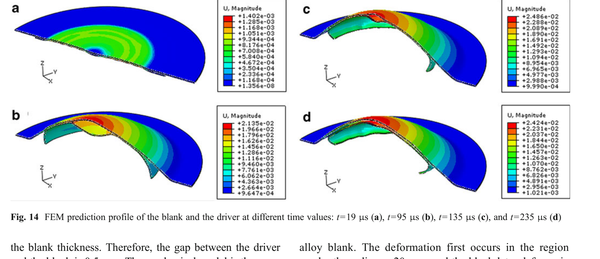

Journal article
3D Numerical simulation method of electromagnetic forming for low conductive metals with a driver
Research at a glance
{kind=link}

Abstract
Electromagnetic forming (EMF) process is a high-speed forming process which can inhibit warping, reduce springback, and improve the formability of material at room temperature. In general, the electromagnetic forming process is applied to high-conductive metals such as copper, aluminum, and their alloys. In order to solve the problem of the low formability of titanium alloy, the electromagnetic forming process can be applied to form titanium alloy. The effects on the forming properties of titanium and other lowconductive metals must be studied before the EMF process is used. To that end, this paper presents a tool: a 3D numerical simulation method of electromagnetic forming with a driver. First, the electromagnetic field distribution and electromagnetic forces are calculated using the ANSYS/EMAG software. The resulting data are then imported to ABAQUS/ Explicit software to carry out mechanical analysis. Although the electromagnetic field calculation does not take the deformation of the blank into account, the results accurately reflect the law of the deformation. This method is especially suitable for cases involving small deformations, such as tube compression and embossing. The calculation can also be used to simulate the impact forming process between the driver and the blank.
Keywords
Recommended citation
Fenqiang Li, Jianhua Mo, Haiyang Zhou, and Yang Fang (2013). 3D Numerical simulation method of electromagnetic forming for low conductive metals with a driver. The International Journal of Advanced Manufacturing Technology, 64(9-12), 1575–1585. https://doi.org/10.1007/s00170-012-4124-1